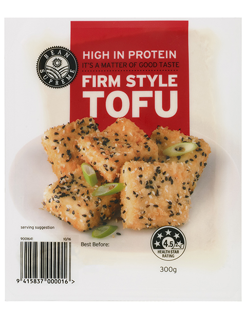
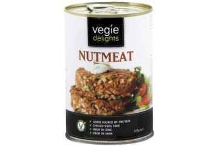
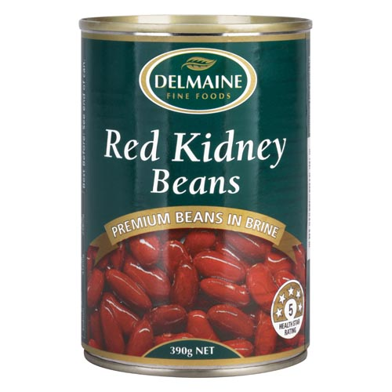

Protein
Protein is one of the most worried about parts of a balanced diet for new vegans - Most carnivores get their protein from meat and eggs. Fortunately these worries are often unfounded - there are an abundance of plant sources that are high in protein, also most people don't need as much protein as they might expect.

Tofu:
100g of tofu has 12g of Protein

Nutmeat:
100g of Nutmeat has 24.4g of Protein

Lentils:
100g of lentils has 7g of Protein

Beans:
100g of Kidney Beans has 7.3g of Protein